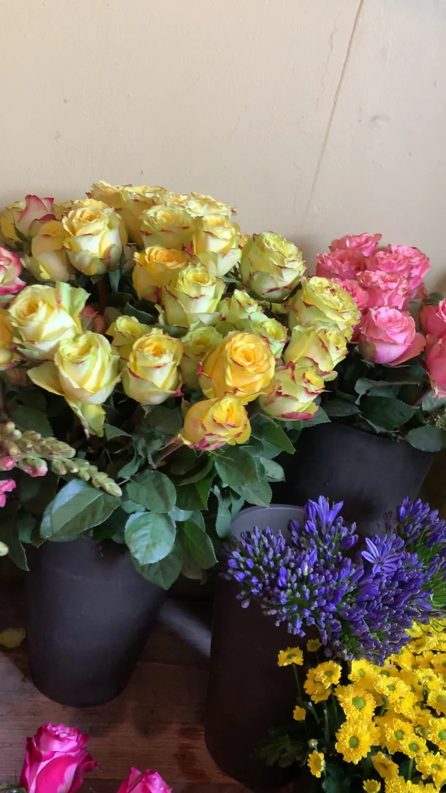
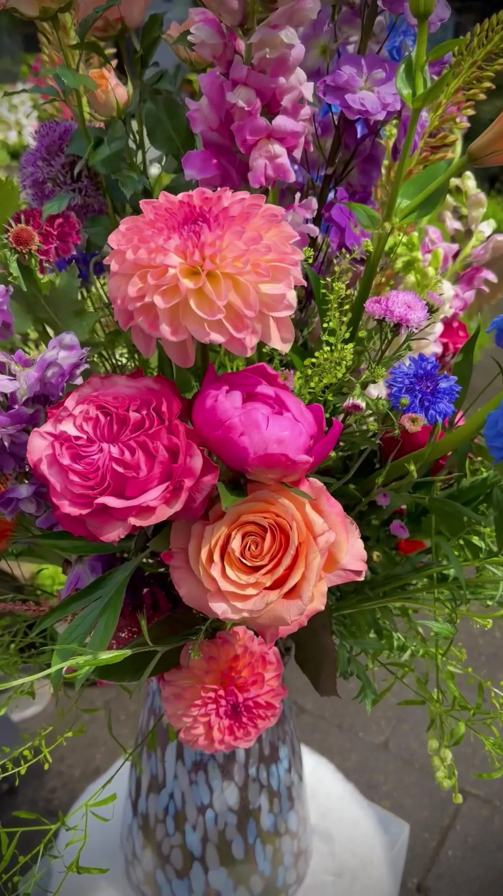
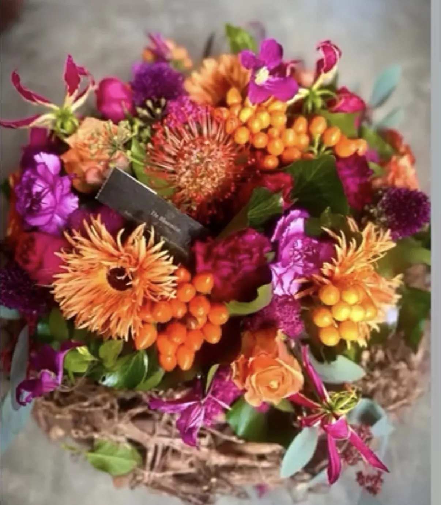
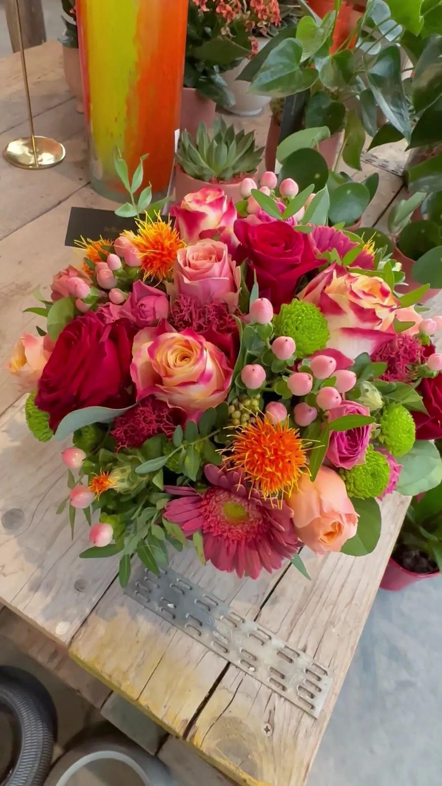
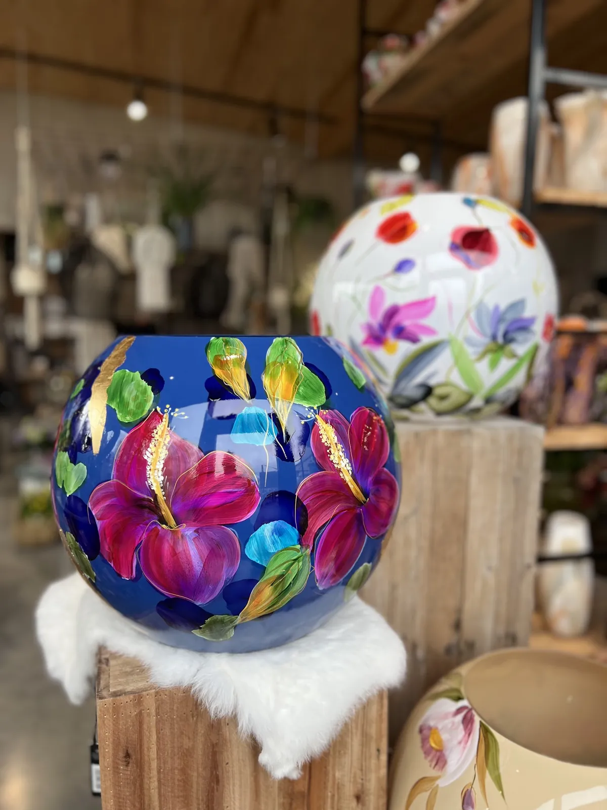
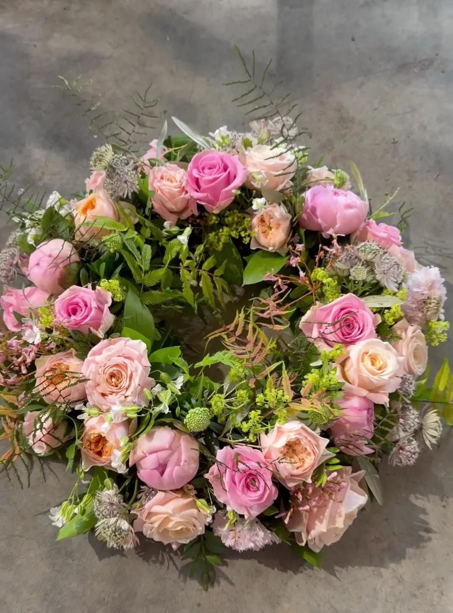
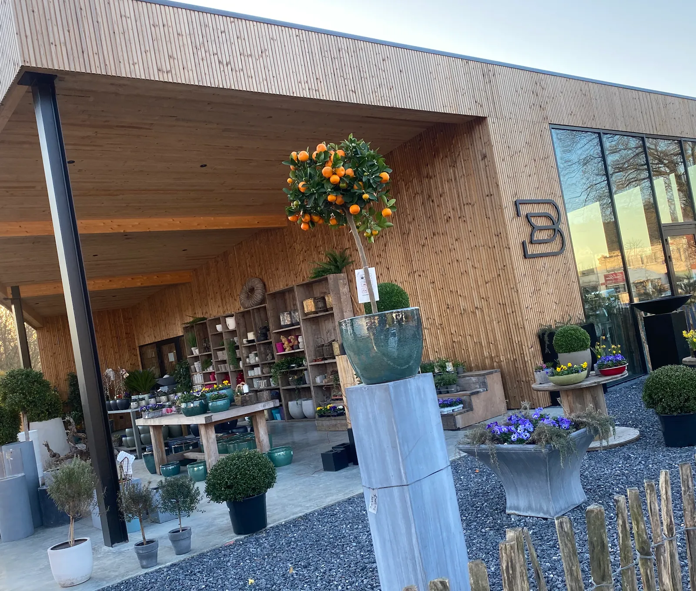
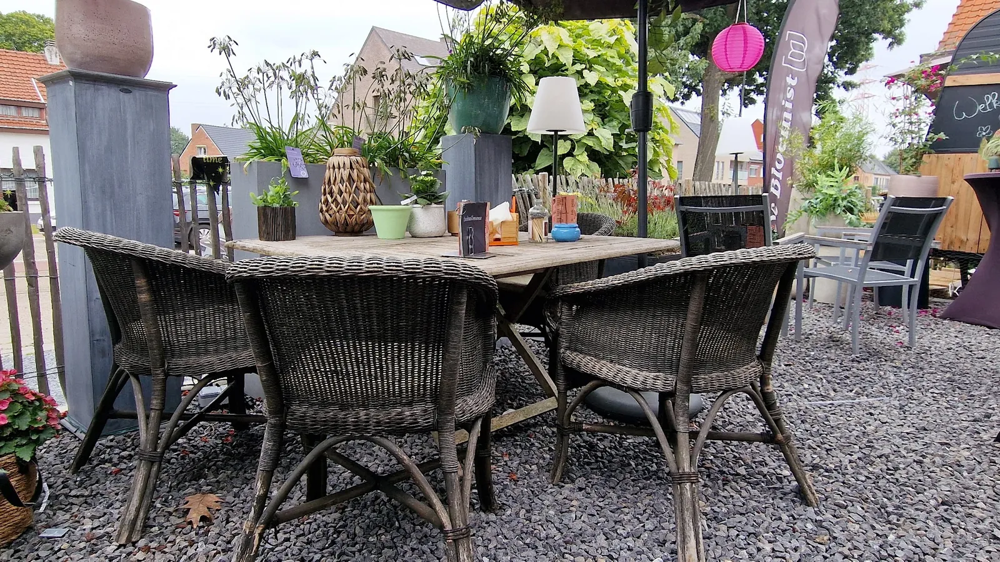

Boeketten
Handgebonden, vol kleur of net heel zacht.
Handgebonden boeketten, grafwerk, bruidswerk en kunstbloemen die jarenlang mooi blijven. Kom kiezen in de winkel, of bel en Tanja maakt het voor je klaar.

Bloemen in volle kleur, of net heel zacht. Kom kijken in de winkel of bel even, dan zoeken we samen wat past.

Handgebonden, vol kleur of net heel zacht.

Voor op tafel, als cadeau of voor een feest.

Om iemand te verrassen.

Sfeervolle deco voor thuis.
Niet alles hoeft vers te zijn. Onze kunstbloemen blijven jarenlang mooi, en voor je trouwdag denken we graag mee.

Een afscheid vraagt rust. Kom gerust langs of bel, dan bekijken we samen wat past: een krans, een liggend boeket of iets eenvoudigs voor op het graf.
Ook als het snel moet, proberen we je te helpen.
“Ik kom binnen in de winkel, leg mijn probleem uit en ze schiet direct in actie. En het resultaat was supermooi!”
Chantal Hoydonckx, over een liggend boeket voor een uitvaartAan de Halveweg vind je meer dan bloemen alleen. Planten, vazen en sfeervolle deco voor binnen en voor je terras, allemaal om rustig tussen te wandelen.
Tanja is al 14 jaar bloemist, en dat zie je aan elk boeket dat over de toonbank gaat.
“De winkel met zowel veel boeketjes en planten, alsook decoratie voor thuis, straalt gezelligheid en moderniteit uit.”
Elias Cutillas-Carpe, op Google

Ik maakte deze demo voor jullie om te tonen wat er kan. Na een kort gesprek maak ik er iets veel persoonlijkers van, helemaal naar jullie wens.
Vrijblijvend. Ik kom langs of we bellen.
Op maat, op jullie eigen domein.
Geen voorschot. Jullie betalen pas als alles klaar is.
Hosting, domeinnaam en kleine wijzigingen, zoals nieuwe openingsuren.
Omdat een voorbeeld meer zegt dan een mail. Zo zien jullie meteen wat er kan, en het kost jullie niets.
Nee. Het gesprek is vrijblijvend. Vinden jullie het niks, dan is het daarmee gedaan.
Na ons gesprek staat jullie site binnen 10 tot 14 dagen online.
Zeker. Jullie domeinnaam kan gewoon blijven, de nieuwe site komt in de plaats van de oude.
Nee, dat doe ik op basis van ons gesprek. Eigen foto's zijn mooi meegenomen, maar niet nodig om te starten.